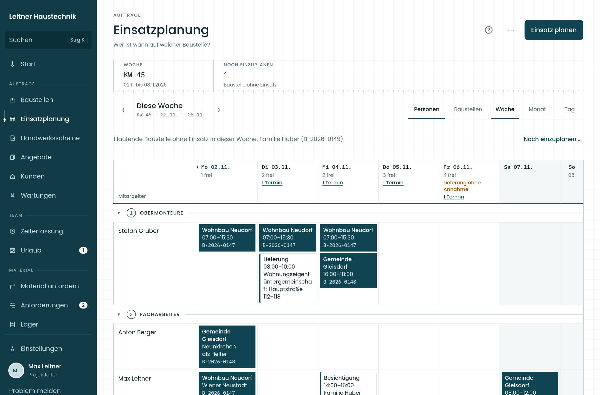
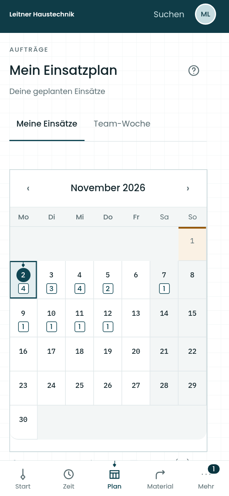
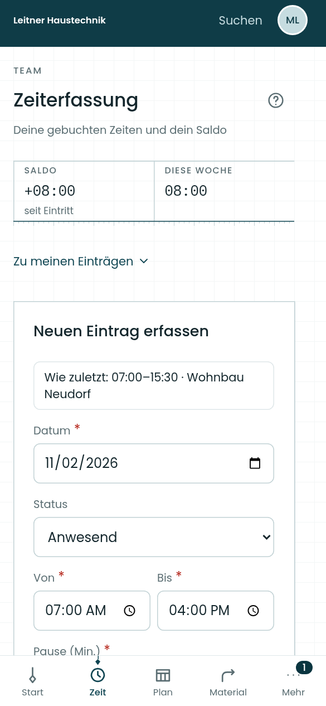
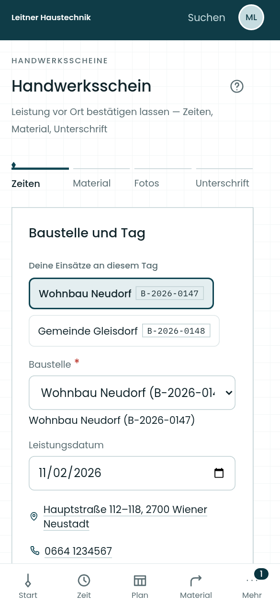

Kunden & Baustellen
Kontakte, Aufträge, Termine und Dokumente in verknüpften Akten.
FÜR INSTALLATIONSBETRIEBE IN ÖSTERREICH
Baustelle und Büro.
Endlich im selben Plan.
Plane dein Team, erfasse Leistungen vor Ort und behalte die Abrechnung im Blick. Senklot bringt deinen Arbeitsalltag zusammen.
Im Browser. Am Handy, Tablet und im Büro.


Originalansichten von Senklot · Beispieldaten
EIN BETRIEB. VIELE HANDGRIFFE.
Ein Auftrag beginnt beim Kunden und endet nicht mit dem letzten Handgriff. Senklot verbindet die Planung im Büro mit dem, was auf der Baustelle passiert – bis zum Leistungsnachweis und zur Rechnung.
Kontakte, Aufträge, Termine und Dokumente in verknüpften Akten.
Team und Baustellen im Tages-, Wochen- und Monatsüberblick.
Arbeitszeiten, Pausen, Zuschläge, Urlaub und Zeitkonten nachvollziehen.
Leistungen, Material, Fotos und Unterschrift direkt vor Ort festhalten.
Anfordern, bereitstellen, Bestand führen und Rückgaben bearbeiten.
Kalkulieren, Rechnungen erstellen und offene Zahlungen verfolgen.
Auch dabei: Nachkalkulation · Wiederkehrende Wartungen · DATANORM-Import · Exporte für die Buchhaltung
VOM ERSTEN ANGEBOT BIS ZUR ABRECHNUNG
Leistungen kalkulieren. Aus dem angenommenen Angebot entsteht die Baustelle.
Team und Termine zuordnen. Jeder sieht seine nächsten Einsätze.
Zeit, Material und ausgeführte Arbeit dokumentieren. Vor Ort bestätigen lassen.
Dokumentierte Leistungen abrechnen. Zahlungen verfolgen und Kosten auswerten.
IM BÜRO GEPLANT. VOR ORT GRIFFBEREIT.
Dein Team sieht seine Einsätze, erfasst Zeiten und fordert Material an. Handwerksscheine halten fest, was geleistet wurde – mit Fotos und digitaler Unterschrift.
Auch mal ohne Empfang.
Zeiten und Materialanforderungen vormerken und später übertragen.


SO SIEHT SENKLOT AUS
Eine durchgängige Oberfläche.
Für die Aufgaben deines Betriebs.
Wer ist wann auf welcher Baustelle? Das Team in einer gemeinsamen Planung.
Echte App-Oberfläche · Ansichten mit Beispieldaten
DER ÜBERBLICK BLEIBT IM BÜRO
Welche Leistungen sind noch nicht verrechnet? Welche Rechnung ist überfällig? Wie stehen gebuchte Stunden und Soll zueinander? Senklot macht die nächsten Schritte sichtbar.
Rechnungen aus Baustellen zusammenstellen, Zahlungen erfassen und fällige Mahnungen bearbeiten. Belege als PDF oder E-Rechnung im ebInterface-Format bereitstellen.
Personal- und Materialkosten je Baustelle auswerten. Fehlende Kostengrundlagen bleiben erkennbar.
Wartungsvereinbarungen, anstehende Ausführungen und den bisherigen Verlauf zusammenhalten.
DIE GLEICHE GRUNDLAGE. DER PASSENDE BLICK.
Rollen und Freigaben bestimmen, wer welche Aufgaben übernimmt. Die Module passen den Funktionsumfang an deinen Betrieb an.
Einsätze kennen. Zeiten buchen. Material anfordern. Arbeit dokumentieren.
Anforderungen bearbeiten, Belege führen und die Abrechnung im Blick behalten.
Das Team planen, Baustellen begleiten und die Ergebnisse auswerten – nach den jeweiligen Rechten.
GUT ZU WISSEN
Senklot richtet sich an Installationsbetriebe in Österreich. Planung, Außendienst und kaufmännische Aufgaben arbeiten mit verknüpften Kunden- und Baustellendaten.
Nein. Module wie Einsatzplanung, Material, Urlaub, Handwerksscheine, Angebote, Rechnungen, Nachkalkulation, Wartungen und Zeitkonten lassen sich je Betrieb auswählen. Die grundlegenden Kunden-, Baustellen- und Benutzerfunktionen bleiben die Basis.
Ja. Senklot läuft im Browser auf Smartphone, Tablet und Desktop. Die Bedienung passt sich an die Bildschirmgröße an; für den Außendienst gibt es unter anderem den persönlichen Einsatzplan, Zeiterfassung, Materialanforderungen und digitale Handwerksscheine.
Zeiten und Materialanforderungen können bei bestehender Anmeldung im Ausgangsfach vorgemerkt und später übertragen werden. Die App zeigt den Verbindungs- und Übertragungszustand an. Andere Abläufe benötigen eine Verbindung.
BRING DEINEN ARBEITSALLTAG INS LOT.
Entdecke, wie Senklot Baustelle und Büro verbindet. Schreib uns für eine persönliche Demo.
Demo anfragen